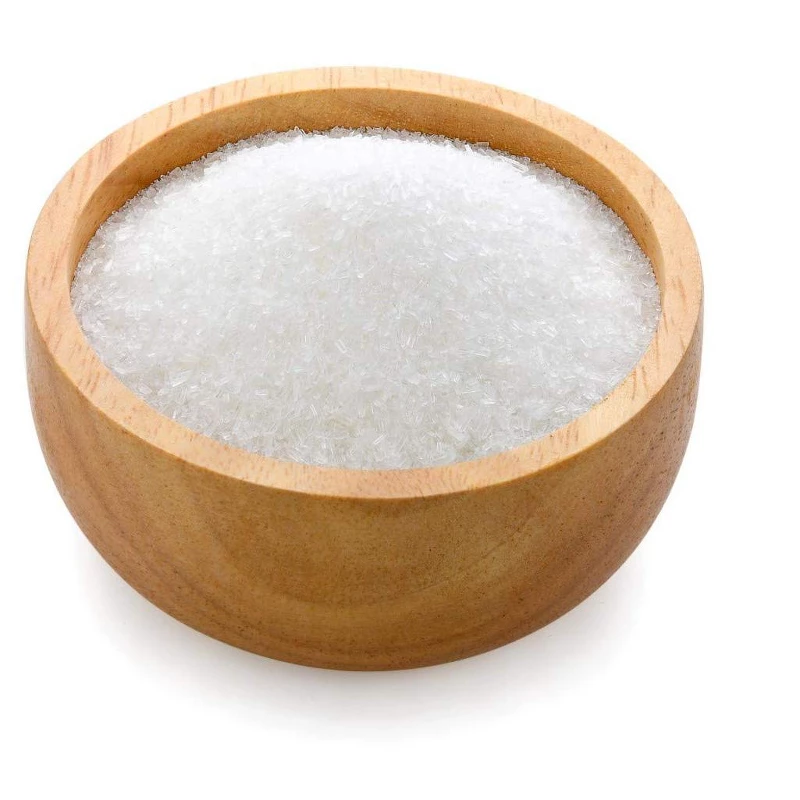
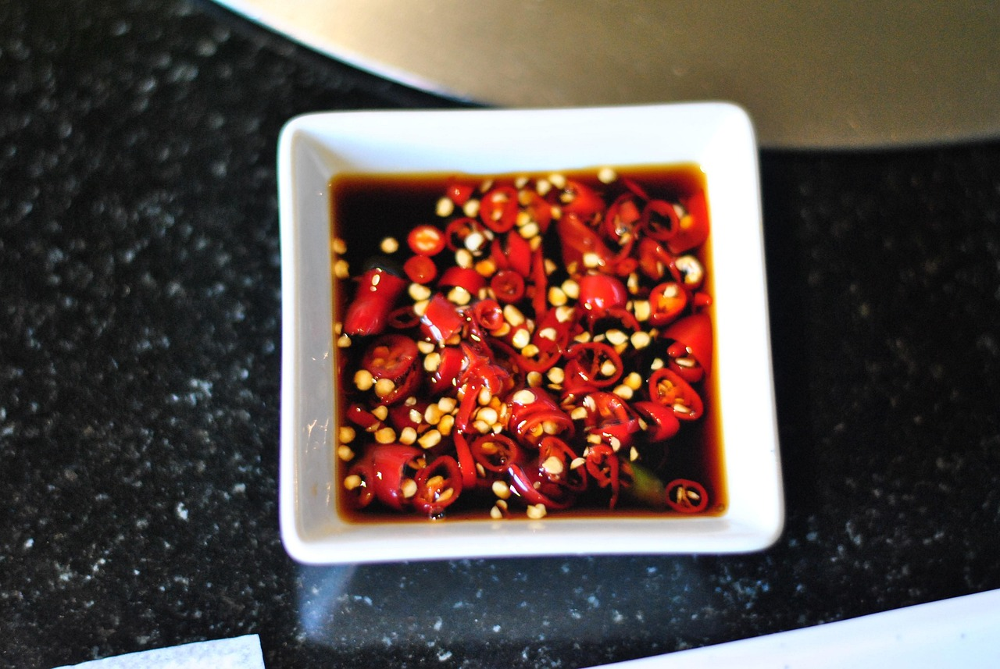
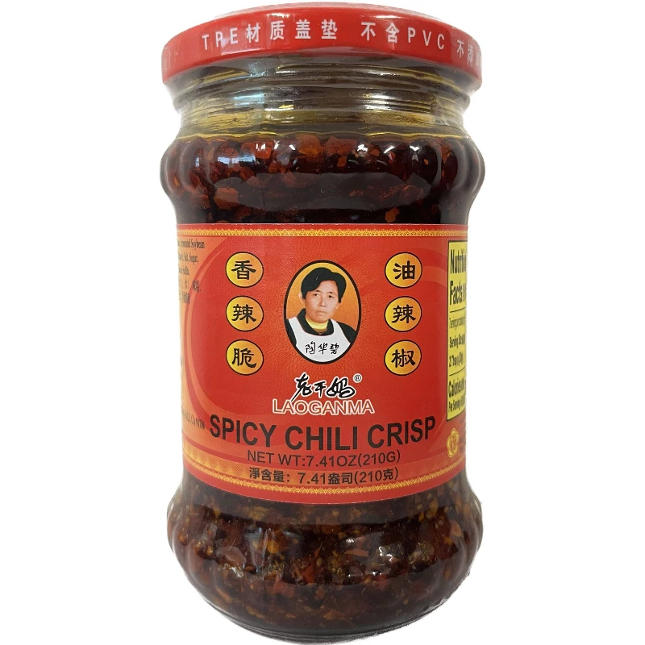
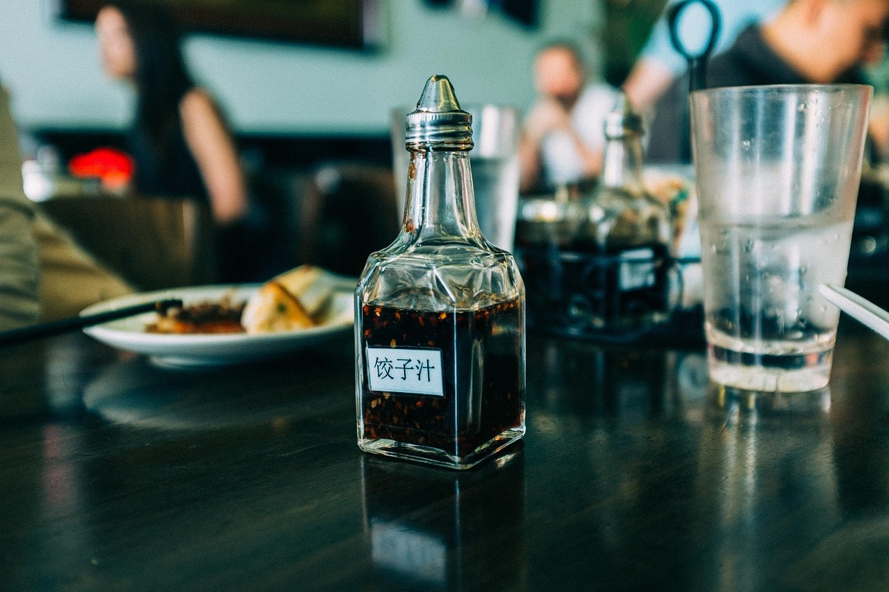
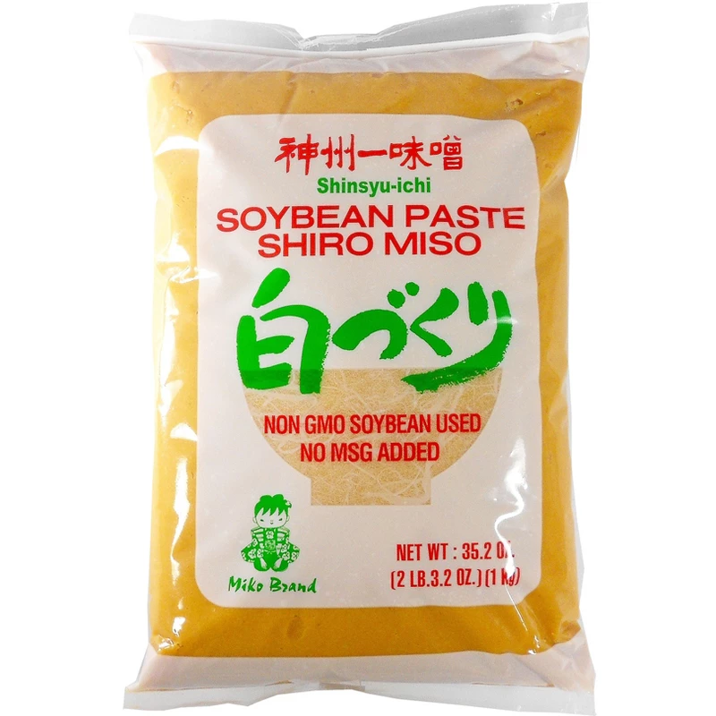
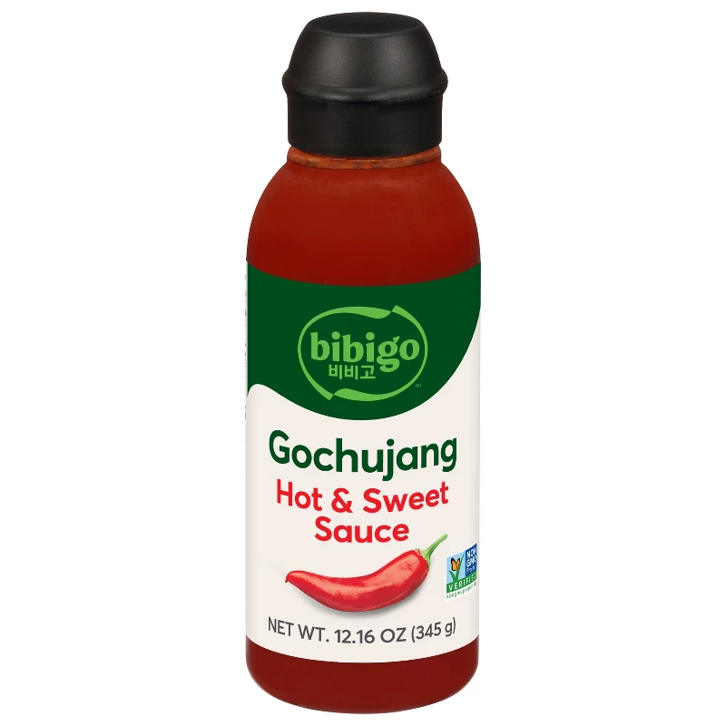
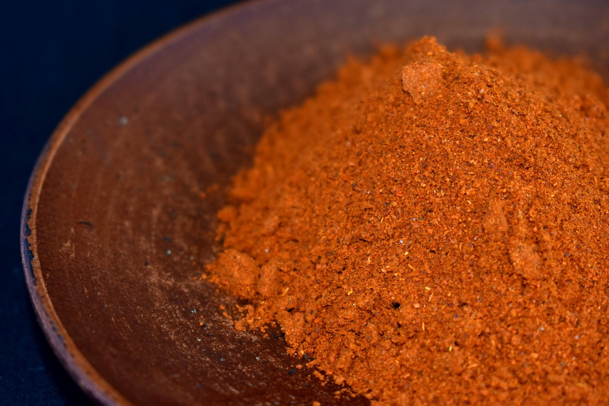
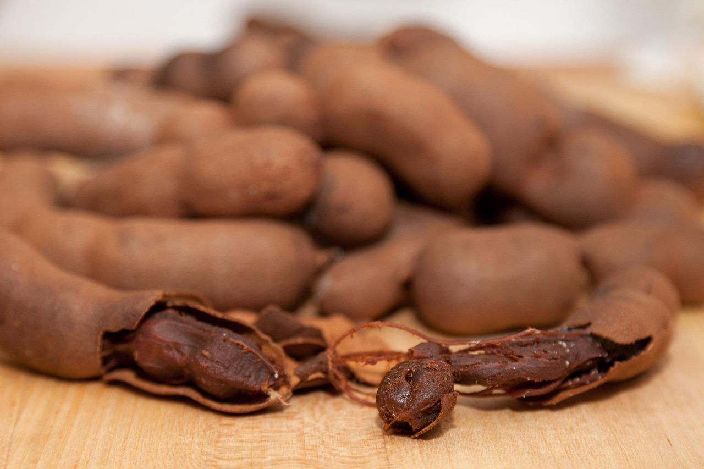
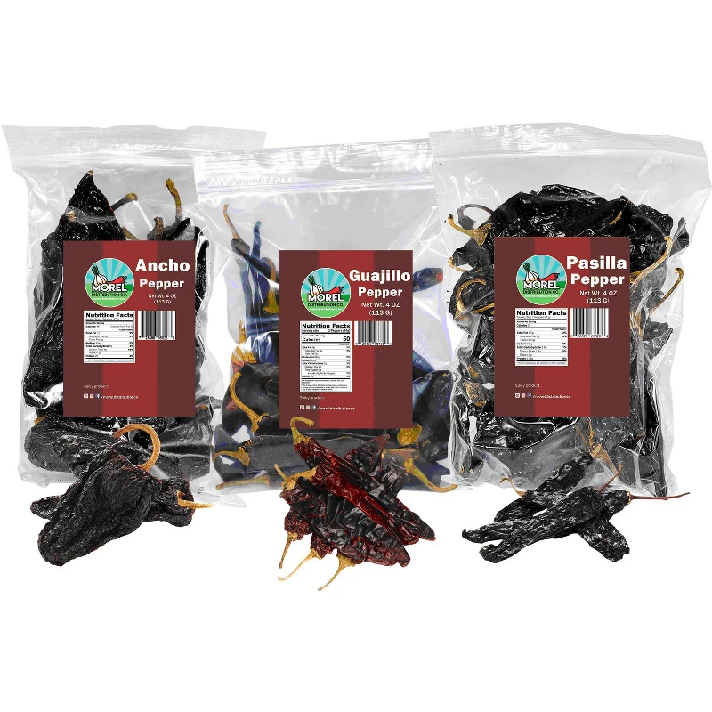
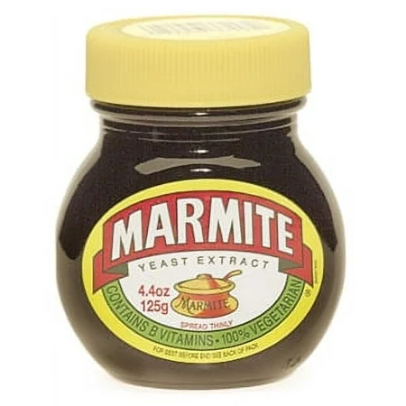

10 Pantry Ingredients You Probably Don't Have (But Should)

Ten ingredients worth adding to your pantry. Most people have never cooked with any of them. You should.
1. MSG

Monosodium glutamate has no flavor of its own. What it does is make everything around it taste more like itself. It activates the same receptors that respond to parmesan, soy sauce, and aged meat. I put a pinch in almost every savory thing I make. It's the reason a dish goes from fine to "what did you put in this."
2. Fish Sauce

A few drops adds savory depth that's almost impossible to trace back to the bottle. It's fermented anchovies and salt. The fishiness doesn't survive the heat. What survives is pure umami. Use it in marinades and vinaigrettes. Same job as MSG, more character.
3. Chili Crisp

Heat, umami, and texture in one spoonful. The oil carries fat-soluble flavor from dried chiles. Fermented black beans add a backbone that hot sauce can't touch. I finish almost everything with it. Eggs, noodles, whatever came off the stove.
4. Worcestershire Sauce

You already have it. You're only using it in a Bloody Mary. It's built from tamarind, anchovies, molasses, and vinegar. Sweet, sour, salty, umami at once. A tablespoon into a burger mix or a pan sauce does more than most people realize. One of the most complex things in your cabinet.
→ Lea & Perrins Worcestershire
5. White Miso Paste

Mix it with butter and put it on anything. It's fermented soybean paste broken down into free glutamates and hundreds of other compounds. No single-ingredient condiment comes close to that complexity. I use it as a finishing sauce on fish and chicken, or whisked into a dressing when I want something that tastes like more work than it was.
6. Gochujang

Korean fermented chili paste. Sweet and funky in a way Sriracha isn't trying to be. You get sour, sweet, heat, and umami from one ingredient. I use it in marinades, especially for chicken. It caramelizes on heat and does something to the surface of meat that's hard to describe and easy to get addicted to.
7. Sumac

Dark red spice that tastes like lemon but earthier. It's high in malic acid, and unlike citrus, the flavor doesn't cook off. I put it on eggs most mornings. Grain salads, roasted chicken. When a dish needs acid but lemon would make it too sharp, this is where I go.
8. Tamarind Concentrate

The sour backbone of pad thai, Indian chutneys, and Mexican candy. It's heavier and rounder than vinegar or lemon and sits differently on your palate. I use it in BBQ sauce and braises. No substitute for it. Once you have a jar you'll find reasons to use it everywhere.
→ Tamicon Tamarind Concentrate
9. Dried Chiles

Not chili powder. Whole guajillo and ancho, toasted dry and rehydrated in hot water. Drying transforms the flavor through the Maillard reaction. You get fruity, chocolatey, smoky notes that don't exist in the fresh pepper or anything from a spice jar. Base of any red sauce worth making. Twenty minutes. The difference is not subtle.
10. Marmite

Sounds disgusting. A small spoonful into a stew or pasta sauce does something you can't identify and can't ignore. It's yeast extract, a byproduct of beer brewing, and one of the most glutamate-dense substances on earth. The naturally occurring MSG levels rival parmesan, and there's a roasted bitterness nothing else delivers. I reach for it when something tastes flat and I can't figure out why.
Every one of these comes from a specific tradition. Fermentation, preservation, centuries of Korean or Indian or Mexican cooking. Start with three. See what happens.
← Back